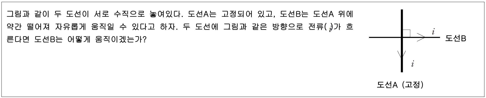

문제 1
그림과 같이 두 도선이 서로 수직으로 놓여있다. 도선A는 고정되어 있고, 도선B는 도선A 위에 약간 떨어져 자유롭게 움직일 수 있다고 하자. 두 도선에 그림과 같은 방향으로 전류(\(i\))가 흐른다면 도선B는 어떻게 움직이겠는가?

그림과 같이 두 도선이 서로 수직으로 놓여있다. 도선A는 고정되어 있고, 도선B는 도선A 위에 약간 떨어져 자유롭게 움직일 수 있다고 하자. 두 도선에 그림과 같은 방향으로 전류(\(i\))가 흐른다면 도선B는 어떻게 움직이겠는가?